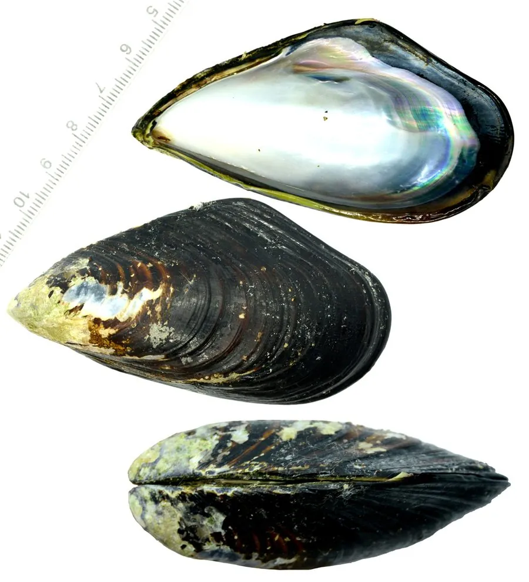

软体动物 · 动物界
厚壳贻贝 Mytilus coruscus

壳质厚实、壳面黑褐的东亚贻贝，栖于岩礁潮间带下部和浅海，是浙江福建沿海重要的养殖贝类。
- 分类
- 门软体动物门纲双壳纲目贻贝目科贻贝科属贻贝属
- 栖息环境
- 岩礁潮间带下部、浅海礁石与养殖吊绳
- 地理分布
- 中国黄海、东海至南海北部及朝鲜半岛、日本
- 保护级别
- 重要养殖贝类，野生资源受采捕影响
物种志
厚壳贻贝的壳长可达十至十五厘米，壳质厚而坚实，壳形楔状，前端尖细，后端宽圆，壳面黑褐至紫褐色，生长纹粗而明显。壳内面呈灰白至淡紫色，有珍珠光泽，铰合部有小齿。足部细长，能分泌足丝附着在岩石和绳索上，一旦附着便很少移动。
它分布于中国黄海、东海至南海北部，以及朝鲜半岛和日本，栖息在岩礁潮间带下部和浅海，成群附着在礁石、船底和养殖设施上，以滤食浮游生物为生。它的生长速度比紫贻贝慢，但肉质厚实、味道鲜美，是浙江、福建沿海的重要养殖对象，养殖多用延绳吊养。它对赤潮毒素有富集作用，采捕上市前需进行毒素检测。
形态与习性
- 壳长十至十五厘米，壳质厚实
- 壳面黑褐至紫褐，生长纹粗明显
- 附着分泌足丝固着于岩石与绳索
- 食性滤食浮游生物与有机颗粒
- 养殖浙江、福建沿海延绳吊养
- 风险可富集赤潮毒素，上市前需检测
趣味知识
- 它的壳比紫贻贝厚得多，徒手很难捏碎。
- 足丝是它自己吐出来的蛋白胶，粘在石头上能抗住浪打。
- 它滤食时会把水里的毒素一起攒在体内，所以上市前要检测。